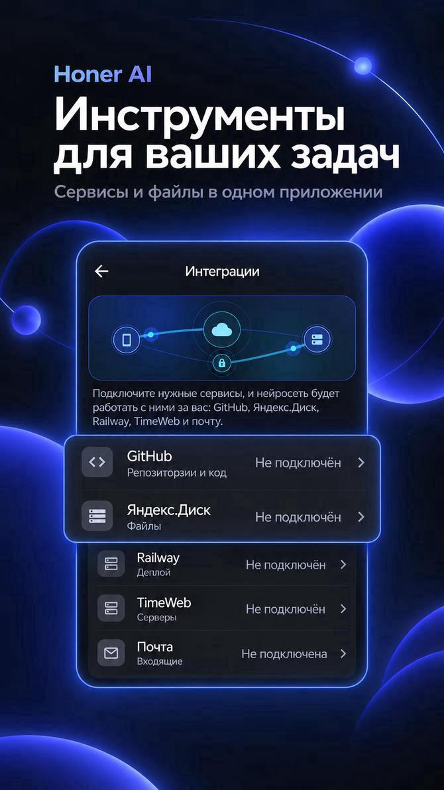
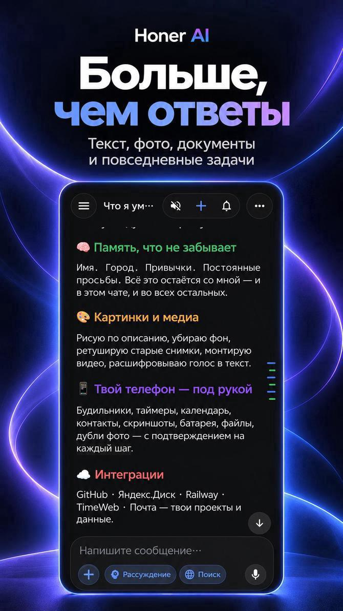
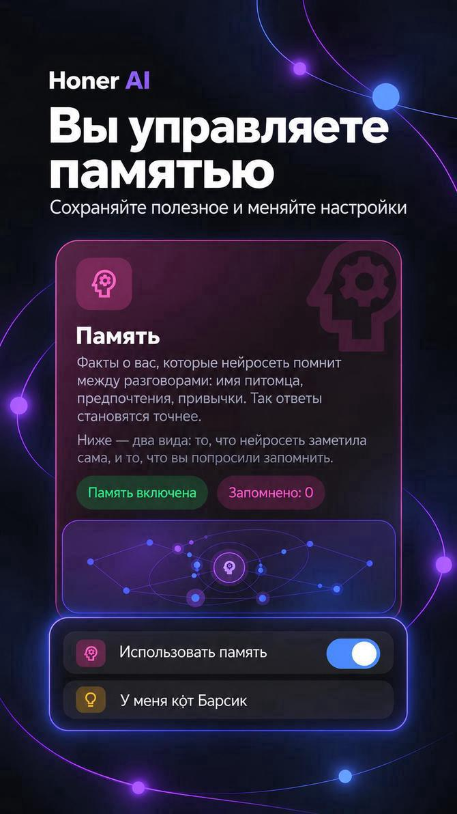
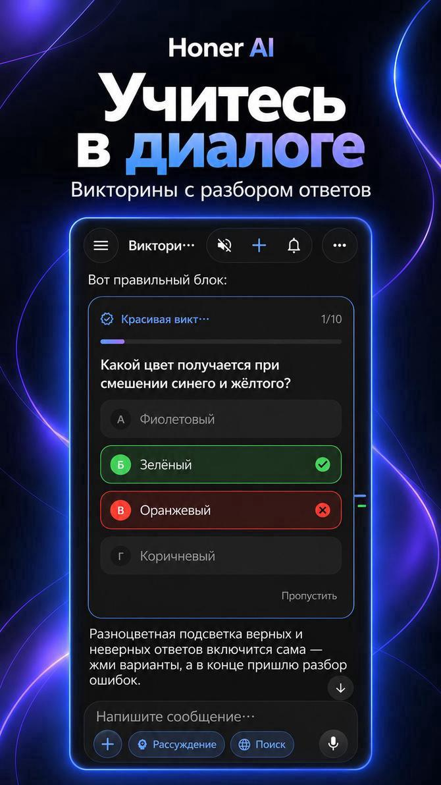
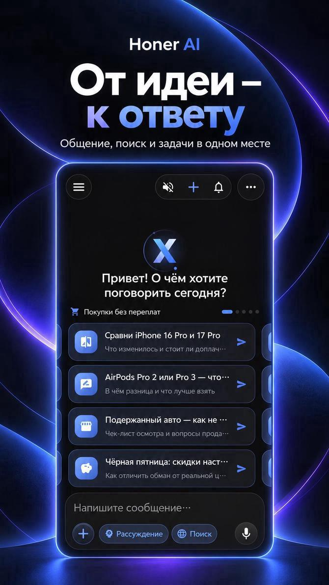
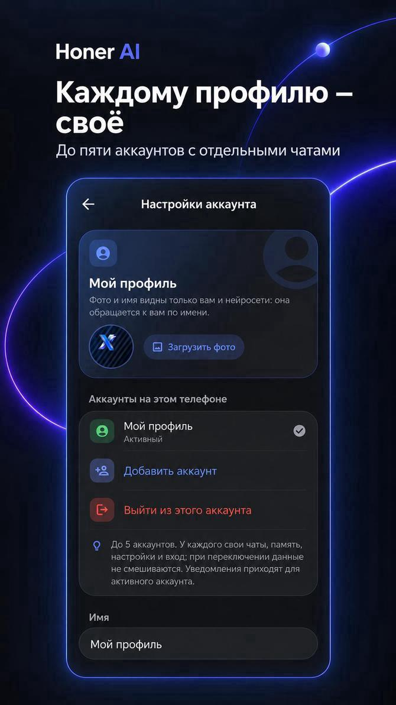
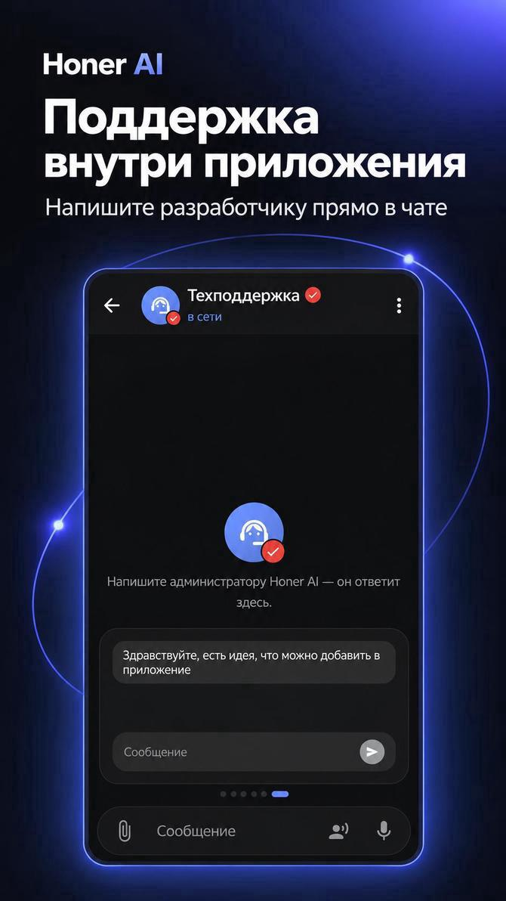

Honer AI — ИИ-помощник на русском для Android
Общайтесь с нейросетью, работайте с документами и фото, создавайте картинки, говорите голосом и подключайте свои сервисы: GitHub, Яндекс.Диск, почту. Девять языков интерфейса.


Что умеет Honer AI
Один помощник для учёбы, работы и повседневных дел. Общайтесь в чате, а память и подключения к сервисам настраивайте в приложении.
Умный чат
Задавайте вопросы, обсуждайте идеи, просите объяснить сложную тему, перевести текст или составить план. История, поиск по чатам, избранное и черновики.
Генерация картинок
Опишите сюжет, стиль и детали изображения. Готовую картинку можно открыть и сохранить из чата. Как составить запрос.
Документы и фото
Прикрепляйте файлы, PDF и до 15 фото за раз: ИИ прочитает, разберёт и ответит. Таблицы, диаграммы и файлы создаются на лету.
Поиск в интернете
Нейросеть ищет информацию, читает страницы и даёт ссылки на источники, чтобы можно было проверить ответ.
Голос
Говорите вместо печати и слушайте ответы. Автоматическое чтение включается отдельно для каждого чата.
Память и задачи
Сохраняйте важные факты для следующих разговоров. Проверяйте сохранённое в настройках памяти, а доступные фоновые задачи — в приложении. Как работает память.
Помощник по приложению
Спросите, где находится нужная настройка: ассистент покажет кнопку перехода и сам поменяет настройку по вашей просьбе.
Игры и викторины
Шахматы, шашки и «Дурак» без денежных ставок, викторины с разбором ответов.
Защита
PIN-код и замок для чатов. Аккаунт и данные можно удалить прямо в приложении. Аккаунт для начала общения не нужен.
Возможности и инструкции
Найдите знакомую задачу, прочитайте пример и перейдите к приложению. В каждой инструкции есть ссылки на главную и скачивание Honer AI.
Практические инструкции
Деловое письмо, учёба, таблица, картинка и другие задачи: порядок действий и примеры.
Готовые запросы
Выберите заготовку, скопируйте её и добавьте свои данные для разговора с ИИ.
Посмотреть в действии
Видеодемонстрации интерфейса и работы с задачами в Honer AI.
Сравнения и выбор
Как оценить ИИ-помощника для Android по своим сценариям и условиям использования.
Скачать Honer AI
Магазины, официальный APK и установка приложения на Android.
Что умеет приложение
Чат на русском, поиск с источниками, голос и работа с материалами.
Память ИИ
Как сохранить полезный факт и проверить, что помощник запомнил.
Создание картинок
Как описать сюжет и получить изображение в чате.
Таблицы и файлы
Как попросить подготовить текст, таблицу или документ.
Подключение сервисов
Настройка GitHub, Яндекс.Диска и других доступных интеграций.
Помощь по приложению
Установка, обновление, доступ к функциям и обращение в поддержку.
Как это выглядит
Прокрутите вправо, чтобы увидеть все экраны.





Интеграции с вашими сервисами
Подключения настраиваются в приложении. Возможности зависят от выбранного сервиса и выданных прав; перед действием проверяйте его описание и запрашиваемое подтверждение.
Публичную информацию GitHub можно использовать в запросах. Для личных материалов требуется подходящее подключение. Подробнее о настройке интеграций.
Девять языков
Интерфейс и ответы нейросети — на выбранном вами языке.
Частые вопросы
Что такое Honer AI?
Это приложение для Android с ИИ-помощником на русском языке: чат с нейросетью, работа с документами и фото, поиск в интернете, голос, генерация картинок и интеграции с вашими сервисами.
Сколько это стоит?
Приложение бесплатно для скачивания. Ответы ИИ обрабатываются на сервере приложения и у внешних поставщиков ИИ, поэтому нужен интернет.
Нужна ли регистрация?
Нет, чтобы начать общение, сторонний аккаунт не нужен. Если хотите восстановить чаты на другом телефоне, можно войти через Яндекс, Google или GitHub.
Какие версии Android поддерживаются?
Android 7.0 и новее.
Умеет ли Honer AI создавать картинки?
Да. Опишите картинку словами, и она появится в чате. Если не получилось, приложение объяснит причину и предложит повторить.
Какие языки поддерживаются?
Девять: русский, английский, испанский, французский, португальский, арабский, китайский, хинди и бенгальский.
Можно ли подключить GitHub и Яндекс.Диск?
В приложении предусмотрены настройки интеграций. Доступ к личным материалам зависит от подключения и выданных прав. Проверьте доступные действия перед использованием. Инструкция по интеграциям.
Что с моими данными?
Чаты хранятся на вашем телефоне; облачная копия включается по желанию. Аккаунт и данные можно удалить в приложении. Подробности — в политике конфиденциальности. Нейросеть может ошибаться — важные сведения проверяйте.
Как скачать Honer AI?
Выберите Appteka, RuStore, официальный APK или релизы GitHub. Версии в источниках могут отличаться. Открыть страницу скачивания и установки.
Как обновить приложение?
Проверьте обновления в магазине, из которого установлено приложение, или выберите официальный APK. Версии в разных источниках могут отличаться. Способы установки и обновления.
Попробуйте Honer AI
Выберите магазин или официальный APK. Приложение можно скачать бесплатно; для ответов ИИ требуется интернет.
Honer AI — AI assistant for Android
Honer AI is an AI assistant for Android with Russian and eight more interface languages. Ask questions, work with documents and photos, generate images, use voice input and search the web with source links. Service integrations are configured in the app. Free to download; an internet connection is required for AI responses. Android 7.0 or newer.